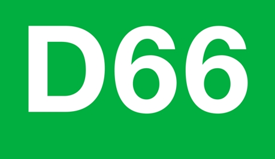
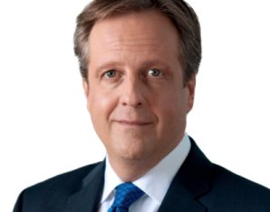

Logo & partijleider D66
ICT
D66 vindt dat er meer ruimte moet gegeven worden om zich te richten op het internet.
Maar omdat er steeds meer tijd wordt doorgebracht op het internet dan voor de televisie vind D66 dat er betere privacy gewaarborgt moet worden.
Ook vind D66 dat het kabinet jaarlijks via internet een volksraadpleging moet houden.